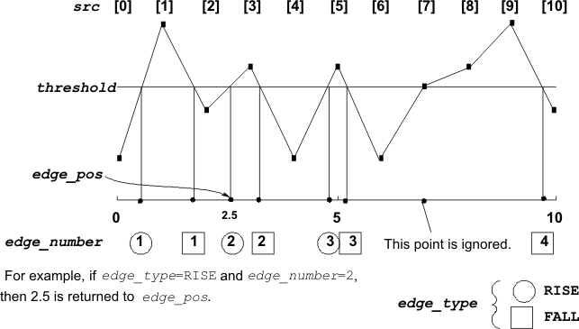

DSP_EDGE
This API searches for a rising edge or falling edge in a specified array.
DSP_EDGE searches for a specified rising edge or falling edge. An edge occurs where a straight line between two adjacent elements of src crosses threshold. Rising or falling is defined by the direction from src[n] to src[n+1] (n = 0, 1, 2, 3 ...). DSP_EDGE interpolates a value between the subscripts of the specified edge, and returns the value to the DOUBLE variable edge_pos.

If the value of an element is equal to threshold, the element is ignored as a rising or falling edge.
If DESCEND is selected for direction, the edge_number is also for the descending direction. A rising or falling edge is determined independently of the selected searching direction. For example, the edge between src[0] and src[1] is a rising edge no matter the direction is DESCEND or ASCEND.
This API is defined in the header file /opt/hp93000/soc/prod_com/include/MAPI/libdsp.h.
Syntax
DSP_EDGE(ARRAY_I& src, DOUBLE *edge_pos, INT start,
DOUBLE threshold, INT edge_type,
INT edge_number, INT direction);
DSP_EDGE(INT *src, DOUBLE *edge_pos, INT size,
INT start, DOUBLE threshold, INT edge_type,
INT edge_number, INT direction );
DSP_EDGE(ARRAY_D& src, DOUBLE *edge_pos, INT start,
DOUBLE threshold, INT edge_type,
INT edge_number, INT direction);
DSP_EDGE(DOUBLE *src, DOUBLE *edge_pos, INT size,
INT start, DOUBLE threshold, INT edge_type,
INT edge_number, INT direction);I/O |
Parameter |
Description / Range |
|---|---|---|
I |
src |
Source array |
O |
edge_pos |
After the specified type of edge is found edge_number times, the position of the edge is stored into edge_pos. If not found, - 1 is returned |
I |
size |
Number of elements to be processed 2 ≤ size ≤ 2097152 size ≤ (size of source array) |
I |
start |
Subscript where the search starts 0 ≤ start ((size of source array) - 1) |
I |
threshold |
Threshold level to determine a rising or falling edge |
I |
edge_type |
Edge type to be searched for RISE: Rising edge FALL: Falling edge |
I |
edge_number |
After the specified type of edge is found edge_number times, the position of the edge is stored into edge_pos. 1 ≤ edge_number ≤ size |
I |
direction |
Direction of searching ASCEND: Ascending (increasing subscripts) DESCEND: Descending (decreasing subscripts) |
Example
INT source[1024];
DOUBLE *point;
:
:
DSP_EDGE(source, point, 512, 256, 4.0, RISE, 5, ASCEND);DSP_EDGE searches from subscript 256 to 767 for the fifth rising edge that crosses threshold level 4.0. The position of this edge is returned to point .